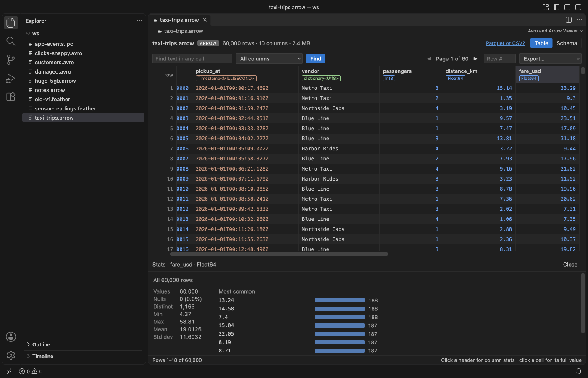
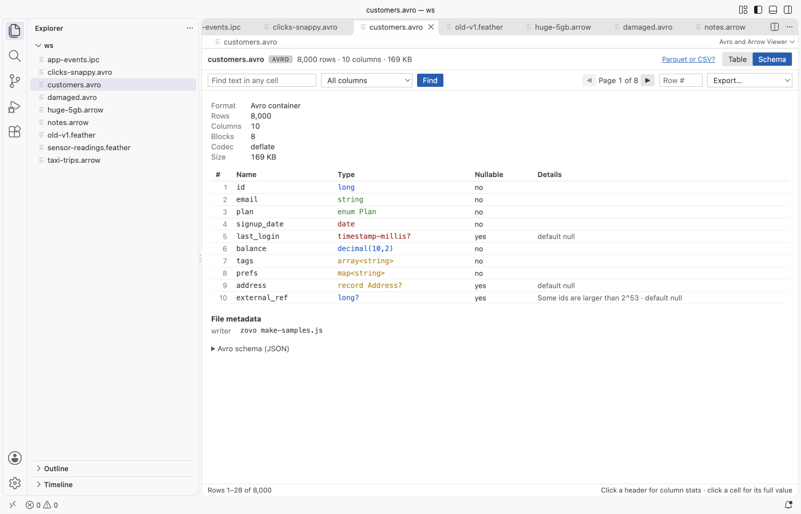
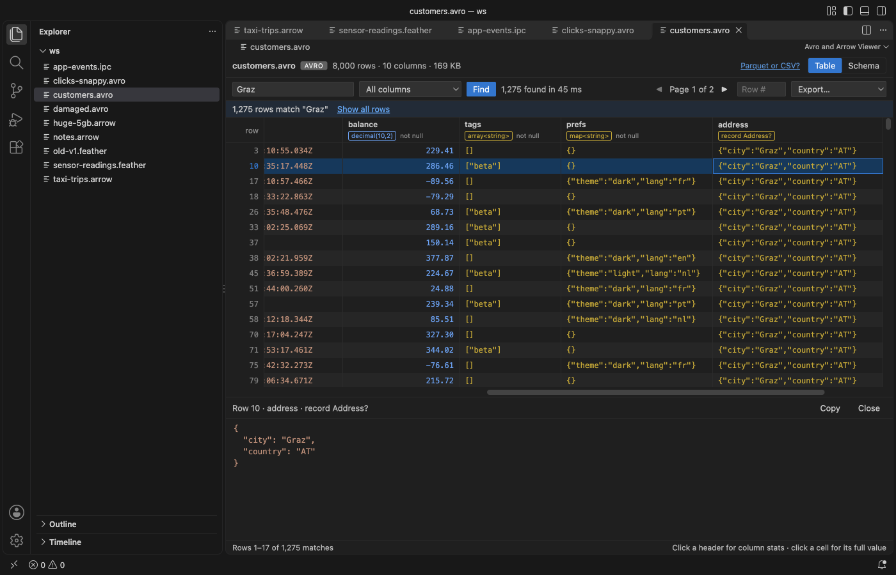

Avro File Viewer, Apache Arrow & Feather Viewer
Avro File Viewer, Apache Arrow & Feather Viewer, a VS Code extension by Zovo
Click an .avro, .arrow, .feather or .ipc file and read it as a table in VS Code, with no Python and no upload.
Free, MIT license. Needs VS Code 1.90.0 or newer. Extension ID zovo.arrow-avro-viewer, version 0.1.6.

Screenshots come from the extension running in VS Code 1.142 on files made by scripts/make-samples.js. No real data appears.
- It opens big files fast. The viewer reads only the file header and the batch or block index, then decodes the record batch (Arrow) or block (Avro) that you scroll to. A 37 MB, 1.5 million row file shows its first rows in about 10 ms in the test suite.
- It reads the files people actually write. Feather V2 from pandas and pyarrow (LZ4 and ZSTD), Arrow IPC file and stream format, and Avro with the null, deflate, snappy and zstandard codecs. 64-bit integers above 2^53 stay exact, and decimals, dates, timestamps, structs, lists and maps show as real values.
- It answers the first questions about a dataset. The Schema tab lists every column with its type and nullability. Click a header for nulls, distinct count, min, max, mean and the most common values. Find searches every row with a Cancel button, and Export writes a page or all rows to CSV or JSON.
Quick start
- Install the extension and click any
.avro,.arrow,.arrows,.featheror.ipcfile. - Scroll or use the pager, open the Schema tab, or click a column header for its stats.
Run "Avro and Arrow Viewer: Get Started" for a short tour.
Questions people ask
Is Avro File Viewer, Apache Arrow & Feather Viewer free?
Yes. Avro File Viewer, Apache Arrow & Feather Viewer is free and MIT licensed.
How do I install Avro File Viewer, Apache Arrow & Feather Viewer?
Click "Install in VS Code" above, or search for zovo.arrow-avro-viewer in the Extensions view.
More pictures
| Schema with types and nullability | Avro file with search results |
|---|---|
 |  |
What you can do
The table shows 200 rows per request and keeps only a few decoded batches in memory. The pager at the top right shows the page you are on (1,000 rows a page) and jumps a page at a time. Type a number in Row # to jump to that row. Click a cell to see its full value below the table, with JSON formatting for nested values and a Copy button.
Each column header shows the name, a short type and "not null" when the schema says so. Arrow types come from the IPC schema, such as Int64, Timestamp<MILLISECOND, UTC> or dictionary<Utf8>. Avro types are written short, such as string? for a union with null, array<string>, enum Plan or decimal(10,2).
Click a header to compute stats for that column. The stats read every row (or every match after Find) in the background, update as they go, and stop when you click Cancel or close the panel. Distinct values are counted exactly up to 100,000.
Find matches text in any column, or in the one you pick, ignoring case. It runs in the extension host with a progress count. Cancel keeps the matches found so far. Show all rows clears the search.
Export has four choices. You can save this page or all rows, each as CSV or JSON. After a search, "all rows" means all matches. Nested values go into CSV cells as JSON text. A CSV can open in Table Viewer by Zovo straight from the message that confirms the export.
The Schema tab also shows the format, metadata version, compression or codec, the number of record batches or blocks, the dictionaries, the file metadata (for example the pandas metadata that pyarrow writes) and, for Avro, the raw schema JSON.
Formats
| Extension | Read as |
|---|---|
.feather | Feather V2 (Arrow IPC file), uncompressed, LZ4 frame or ZSTD |
.arrow | Arrow IPC file format, or stream format if there is no file header |
.arrows, .ipc | Arrow IPC stream format, or file format if the header says so |
.avro | Avro object container file with the null, deflate, snappy or zstandard codec |
The reader is picked from the first bytes of the file, so a stream saved as .arrow still opens.
Limits
| What | Limit |
|---|---|
| File size | Up to 4 GB. Bigger files show a message instead of loading. |
| One record batch or Avro block | Up to 1 GB, since it is decoded whole when you scroll to it. |
| Remote files (virtual workspaces) | Read whole, up to 256 MB. |
| Search results | The first 5,000,000 matches. |
| Feather V1 | Not supported. Files written before 2020 get a message that explains how to save them as V2. |
| Avro bzip2 and xz codecs | Not supported. The message names the codec. |
| ORC and Parquet | Not read here. Parquet opens in Table Viewer by Zovo. |
Privacy
The extension runs offline. It makes no network calls and has no telemetry. It never writes to the file you are viewing; Export always asks for a new file. The webview runs under a strict Content Security Policy with no remote scripts, and file content goes into the page only as text.
Settings
| Setting | Default | What it does |
|---|---|---|
arrowAvroViewer.askForRating | true | Ask for a Marketplace rating after 3 files that opened without an error, on 2 different days. "Later" asks one more time after 7 days, "No thanks" never again. It never asks after an error. Turn it off with false. |
arrowAvroViewer.showSupportLinks | true | Show the small Sponsor and More free viewers links in the status line. |
Libraries
Apache Arrow for JavaScript (Apache-2.0), avsc (MIT), fzstd (MIT), lz4js (ISC) and snappyjs (MIT). The license texts are in THIRD-PARTY-NOTICES.txt.
License
MIT. Not affiliated with the Apache Software Foundation. Apache Arrow and Apache Avro are trademarks of the Apache Software Foundation.
Install Avro File Viewer, Apache Arrow & Feather Viewer
Click the button to open VS Code and install it, or press Ctrl+P (Cmd+P on macOS) in VS Code and run ext install zovo.arrow-avro-viewer.
Free, MIT license. Needs VS Code 1.90.0 or newer. Extension ID zovo.arrow-avro-viewer, version 0.1.6.
Source code and issues are on GitHub.
Support this work
If this extension saves you time, you can support the work on GitHub Sponsors. Monthly tiers start at $5, and one-time tiers start at $15. Sponsorship is optional, and the tool works the same without it.